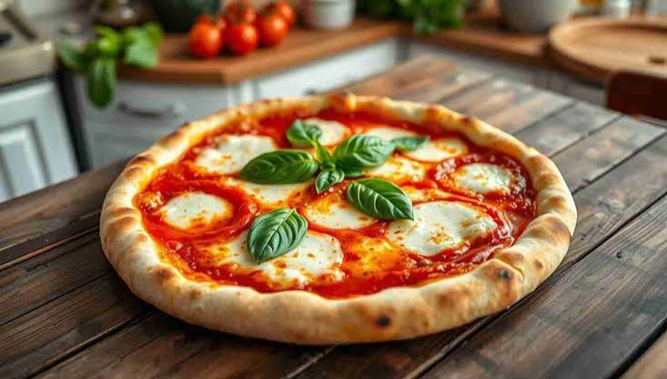

Experience the Taste of Italy
From handcrafted pasta to rich espresso culture, we bring the heart of Italy straight to your table. Every dish is prepared with passion, tradition, and elegance.

About Us
Located in Nairobi, Fresh Italian Delights Online combines traditional Italian cooking with modern hospitality. Our chefs carefully prepare each dish using fresh herbs, imported cheeses, homemade sauces, and quality ingredients to bring you the true flavours of Italy.
Why Choose Fresh Italian Delights?
- Authentic Italian recipes
- Fresh ingredients prepared daily
- Professional chefs
- Elegant dining atmosphere
- Fast and reliable delivery
- Affordable luxury dining
Our Services
- Dine-In Experience
- Online Ordering
- Home Delivery
- Private Event Catering
Chef's Signature Dishes
- Pizza Margherita
- A wood-fired pizza topped with mozzarella cheese, fresh basil and rich tomato sauce.
- Spaghetti Bolognese
- Traditional Italian pasta served with slow-cooked beef in a rich tomato sauce.
- Chicken Alfredo
- Creamy fettuccine pasta served with grilled chicken breast and parmesan cheese.
- Tiramisu
- A classic Italian dessert layered with mascarpone cream, coffee-soaked biscuits and cocoa.


Opening Hours
Monday - Friday: 9:00 AM - 10:00 PM
Saturday: 9:00 AM - 11:00 PM
Sunday: 10:00 AM - 9:00 PM
Visit Us Today
Whether you are craving handcrafted pasta, authentic pizzas, refreshing beverages or delicious desserts, Fresh Italian Delights Online is ready to serve you with excellence.